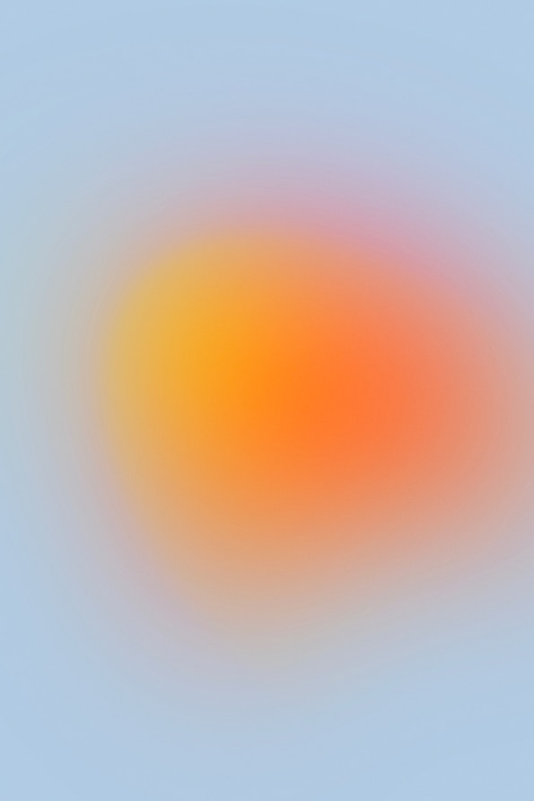
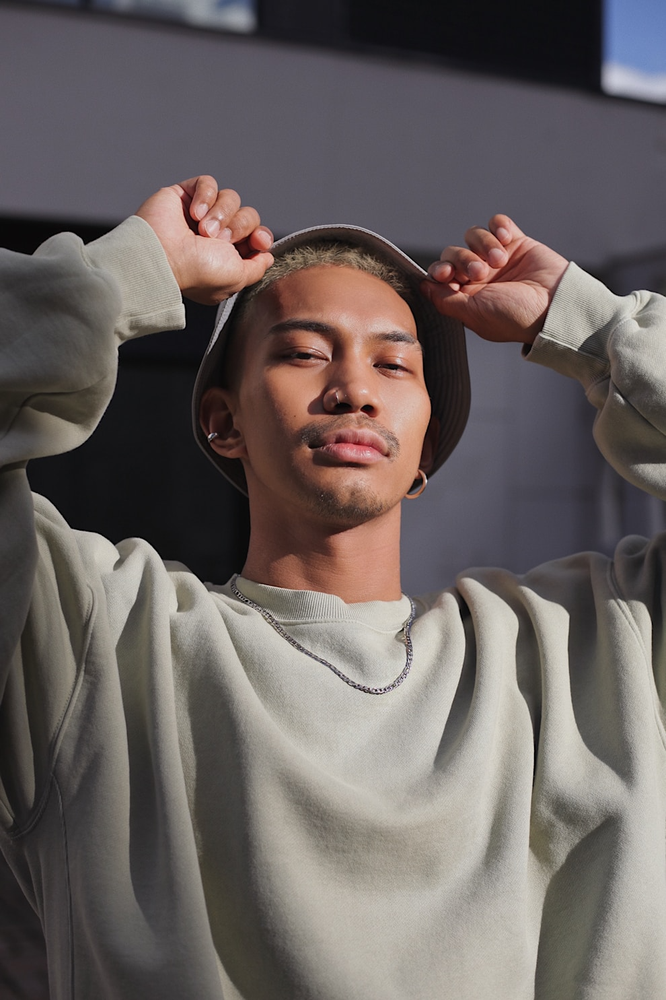

协同画板
新画的会议室屏保，开会请用CSES

小米电视推广投放相关问题讨论


当前轮次
主题：通过市场调研和竞争分析，合理定产品和服务。
期待...
我的投票
主题：何如为客户建立安全感？
提示：填写过程中为匿名，请结合主题填写重要且易行的KR
等待主持人结束填写进入投票环节
可以选择 1 个你觉得最好的 KR写评语
我投票的KR (0)
主题：
添加评语标签
写评语
会话
直通车点击成本这两天涨了三毛，我怕蓄水期把预算烧完了。等下我提议往私域挪一部分，你supply这边跟得上吗？
跟得上，但要提前锁量。私域承接量你先给我个数，我按这个铺前置仓。
企微那套自动化 SOP 我拉了个盘：46 万会员、日活 8%，真按开门红首小时的峰值算，得做到 10 万级并发才不掉链子。上次大促就是承接不住掉了一半，这回我想先压测再上，5/25 之前给结果。你觉得这个节奏来得及吗？
来得及。压测报告出来直接甩群里，我帮你盯着投放那边不要提前放量。
按现在的动销率推，开门红当天能吃掉四成的量。首小时我盯。
插一句退货率：详情页接尺码助手之后，试点的 12 个 SKU 退货率从 23% 降到 17%。如果 6/5 前能把 TOP50 都接上，整体压到 18% 是有把握的。设计和前端的排期我已经问过了，卡在接口。
投放预算那版我跟李娉对完了，5/23 之前发你。ROI 按 1:3.2 卡，超了就砍站外。
收到，我记进待办了。
会议还在进行中，离开后可以从会议列表重新加入。
新画的会议室屏保，开会请用CSES